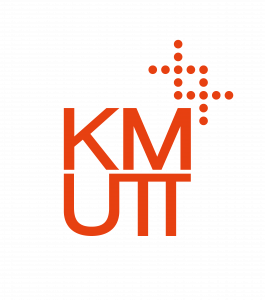

Education

- Matriculation: Passed with two distinctions (March 2018 - March 2019)
- University of Computer Studies, Yangon: First-year interrupted due to COVID-19 and political unrest
- GED: Passed with marks of 662 (June 2023 - November 2023)
- Duolingo: Passed with a score of 110 (February 2024 - March 2024)
- Computer Engineering (August 2024 - current)
Achievements
- Second Place in Township Mathematical Olympiad, Grade 10
- First Place in School Level English Impromptu Talk, Grade 9
- Passed Grade 9 with an "A" grade